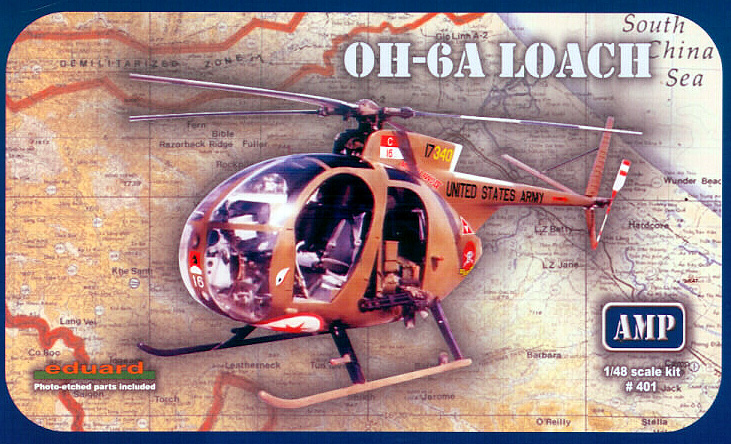
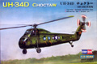
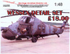

|
The Alouette 3 series was derived from the Alouette 2 with a larger cabin, more powerful engine and
improved performance. It could seat seven, be configured for cargo or
medical evacuation roles. With production beginning in 1959 and
continuing through today this French workhorse of a helicopter has seen
service with over 90 different countries in both military and civilian
roles. Take a look at the Fujimi 1/48 scale Aérospatiale Alouette III.
5/6/05
In 1966 Sud-Aviation was developing the Sa-341 and had an operational prototype by February of 1967. This aircraft
quickly caught the attention of the British Military Services. The
Sa-341 incorporated several unique (for the time) features such as
composite rotor blades and a fenestron or fantail which contributed
greatly to noise reduction. The Gazelle served with several air forces
and filled a demand within the civilian market. Here is the 1988 release
from Fujimi of the 1/48 Aérospatiale Gazelle SA-341 D/F. 1/1/2010
In 1958, Boeing/Vertol completed a company-sponsored prototype of a new tandem rotor helicopter design
developed as the YHC-14 due the US army 's request for a medium-size
turbine powered helicopter. The helicopter has the ability to land, taxi
in and take off from the water and is able to stay afloat for up to two
hours in two-foot seas. The aircraft's primary mission is to provide
all-weather, day/night assault transport of combat troops with a
secondary mission of supply movement. New from Academy, this is the 1/48Boeing CH-46E “Bull Frog”
11/5/04, updated 2/17/05
The BO-105 is a lightweight twin-engine 5/6-seater multi-role helicopter
incorporating a four-blade, rigid main rotor that provides excellent
flight performance, maneuverability and total control, even in negative
"g'' maneuvers. It was found to be particularly suited for Medevac,
police, offshore, and passenger transport operations. In 1991 MBB was
absorbed by Eurocopter who continued to produce the type until 2001.
This is the 1/48 scale kit from ESCI of Charly Zimmermann’s
demonstration model of the BO-105 Light Duty Helicopter.
06/04/2010 Construction Completed 6/8/10
This Sikorsky heavy lifting helicopter holds a couple of specific landmark items for rotary aircraft; number one is that is the last heavy lifter built using piston engines and was, at the time of its service use, the largest heavy lifting helicopter in existence. From Special Hobby here is the 1/72 scale CH-37B "Mojave".
9/10/12
This aircraft has the fine distinction of being the first helicopter to achieve production status. Originally intended as a six  passenger transport aircraft in 1939 she first flew in 1940 and with
the opening of the Second World War was quickly adapted to military use.
Intended for rescue operations and reconnaissance roles the results of
Allied bombing prevented any more than ten or eleven every making it off
the assembly line. Built by Focke Achgelis, this is the Fa 223E-0 Drache.
3/18/06 Construction Completed 9/15/08
passenger transport aircraft in 1939 she first flew in 1940 and with
the opening of the Second World War was quickly adapted to military use.
Intended for rescue operations and reconnaissance roles the results of
Allied bombing prevented any more than ten or eleven every making it off
the assembly line. Built by Focke Achgelis, this is the Fa 223E-0 Drache.
3/18/06 Construction Completed 9/15/08
In mid 1952 the U.S. Navy issued a requirement for an anti-submarine helicopter with greater
capabilities then the Sikorsky S-55 then in service. Sikorsky responded
with its S-58, which was essentially a scaled-up version of the S-55
with more than double the power. The H-34 became the standard helicopter
for many ground forces throughout the world and was the first
helicopter used as a transport for the President of the United States.
Known by many names such as Seahorse, Seabat or Choctaw, it was the
final evolution of the rotary engine powered helicopter. Out of
production for nearly eighteen years now, this is the Revell 1/48 scale H-34G. 7/8/04. Construction completed 10/3/04
Developed in 1955 by Bell Helicopter as a utility aircraft the type went into full production in 1959 with
approximately 7000 of them seeing service in Vietnam in one capacity or
another. Soon field personnel began to modify the helicopters mission
from medical evacuation to cargo transport and troop transport. Many
different forms of armament were explored on the airframe and ultimately
this experimentation prompted the development of the specialty attack
helicopter like the Cobra. Check out the re-pop of Academy's 1/35 Huey-1C Gunship.
7/10/09 Construction completed 7/28/09
In the civilian world it is the Hughes 500 while the military designation is OH-6A Cayuse but service men know it as the Loach, 
a nickname born from its class designation LOH or Light Observation
Helicopter. The OH-6 established the form for the future of light
military and civilian helicopters. Coming from the Ukraine here is AMP
Models first foray into aircraft modeling, the 1/48 multi-media Hughes OH-6A Loach.
11/23/09
The Ka-50 is a state-of-the-art and powerful battle helicopter which is in limited service with the
Russian Air Force. The helicopter has a number of unique
characteristics including a single seat to increase combat and flight
characteristics and reduce operational costs. It can perform loops,
rolls and “the funnel”. Also known as the ‘Black Shark’ or ‘Werewolf’
for a modest price you too can add a Kamov Ka-50 Hokum to your collection. 12/3/04 Construction completed 1/21/2010
The Kaman Aircraft Company developed the HU2K-1 in 1959 as a single engine light utility helicopter for Naval use.
In 1972 this airframe was selected for development in the LAMPS (Light
Airborne Multi-purpose System) program for the Antisubmarine Warfare arm
of the Navy. At this time the designation was changed to SH-2D then
upgraded to SH-2F. Here I take a look at the old Matchbox kit issued
under the Revell nametag with some Cobra Company extras. Kaman SH-2F Seasprite.
4/15/07
One of the most produced and one of the most heavily armed helicopters in the world with nearly 15000 examples produced
the Mil Mi-8 Hip holds a special place in history. A place that is
still being carved out as this type of helicopter is still in military
and civilian service in nearly fifty four different countries. A sturdy
aircraft that gave rise to the Mi-24 Hind Trumpeter has done a fine job
of replicating this in plastic. While not a perfect kit it certainly
makes for a good base of development. Here we can take a look at this
1/35 scale kit and what it takes to make it better, let’s go play with
the Mil Mi-8MT/Mi-17 Hip-H. 2/3/07 Construction completed 9/20/07
One of the most menacing weapons in the air is the Mi-24 assault helicopter. Designed around twin turbine
engines driving a five-blade rotor the Mi-24 is a close counterpart to
the American AH-64 Apache, but unlike this and other Western assault
helicopters it is also capable of transporting up to eight troops or
additional weapons for in-field reloading. This combat helicopter became
the "signature" weapon of the conflicts in Afghanistan and the Chechen
wars and is widely distributed among the forces of the former Warsaw
Pact countries. Mil-24 D Hind.
9/24/04
In 1943 the War was still raging in Europe, the Japanese were being held at bay in the Pacific and Frank Piasecki was
discussing twin rotor lifting systems with the Navy's Bureau of
Aeronautics. By June of 1948 the basic design of what was to become the
H-21 series was complete and five prototypes were ordered. The CH-21 was
an Air Force workhorse serving in the early years of the Vietnam War
and lead to the development of the CH-47 Chinook. Here is the Special
Hobby multi media 1/48 scale kit of the venerable Piasecki H-21 Shawnee. 1/5/08
The Sikorsky S-51 design followed the now classic helicopter configuration with a single main rotor and
an anti-torque tail rotor to provide a helicopter having greater useful
load, endurance, speed, and service ceiling than the previously
produced R-4. It proved so versatile for light transport, casualty
evacuation, air-sea rescue, and rescuing downed pilots that the demand
for them considerably exceeded the supply. From FM in France, this is
the Sikorsky R-5/HO3S-1 Dragonfly.
2/18/05
During the final days of World War 2 the helicopter was just beginning to see some service with the military. By 1949 the US Air Force had began to truly accept the helicopter and was looking to improve the load capacity. Igor Sikorsky made a tremendous leap forward in design with his response in the S-55 “Chickasaw”. This type has only been modeled twice in 1/48 plastic, both of which are very hard kits to find these days. Let’s take a look at the better of the two, the 1955 mold from Revell of the Sikorsky S-55/H-19 “Chickasaw”. 9/7/07 Construction completed 9/24/2012
Hey all you rotor heads out there, do you remember the Revell 1/48 H-19 Rescue Helicopter or maybe the Revell 1/48 S-55 Whirlwind? Bet you have at least one in your stash! Have you ever wished there was some help for that horribly inaccurate interior or something you could do for those thick, Coke bottle glass clear parts? I started to play with one of those kits and had these same thoughts so I did something about it. Follow this link to see my limited run replacement complete clear parts set and interior for the 1/48 H-19/S-55 Detail Sets. 8/18/2011
Sorry but this is just here for reference now. All molds have run their course and demand has fallen too low to merit making new ones. Thanks for your support when these were available. 7/11/2014
This was one of the real workhorse helicopters of the Vietnam War and the final evolution of the 
rotary engined Sikorsky helicopter. Countless injured soldiers were
removed from the front line in this while even more were delivered by
it. Later it was upgraded to turbine power and those units are still in
service today. Hobby Boss has made quite an impression within the
modeling community with several new releases and here we take a look at
the 1/72 scale version of this helicopter. Here we are with the SikorskyUH-34D Choctaw.
7/14/07
The Westland Wasp was developed as a light anti-submarine and anti-surface warfare helicopter
for operations from small ships and was the first of a new generation
of gas-turbine powered light helicopters. This kit from Fujimi is
slightly on the crude side but can be made into a fine representation of
the aircraft with a little extra TLC. Come with me and take a look
inside this box of plastic from the late 1970’s. From Fujimi, the 1/48
scale Westland Wasp H.A.S. Mk.1 in British Royal Navy livery.
3/18/05
I think that one of those highly sought after 1/48 plastic model kits is
the old Revell H-34D/G kit followed by the S-58 Wessex kit. 
I have several H-34 and Wessex kits in the stash and when Cutting Edge
closed up shop I was resigned to building my own detail sets, that is
until Heritage Aviation released this set. New in 2009 this resin and
white metal upgrade set allows the modeler to build one of several
different version of the S-58. Let’s take a look at Heritage Aviation’s Wessex Upgrade.
4/13/09
|
|